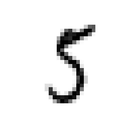

Binary Classification and ML Essentials with MNIST Data - 1
Today we will try to enter into the rather broad field of machine learning through its most simple and most comprehensible task, binary classification. You can think of binary classification as yes, no questions. You want to know whether you have an apple on the table, if you saw an orange, you would naturally say "this is not apple", if you saw an apple, you would say "Here stands an apple with all of its might", or simply "oh apple". A binary classifier does exactly the same thing. It takes a bunch of data that is labeled with the class we will be searching for, and tries to identify unlabeled data based on the labeled examples we had provided. The term binary refers to the nature of the label which consists of two values, like "yes, no", "apple, not apple", "1, 0". Since most algorithms used in machine learning requires numbers as input, the "1, 0" couple is the prefered one.
This post involves a lot of coding in Python 3. Though the ideas related by the code will be explained with words, we assume a very basic reading knowledge of python, just enough to understand some of the keywords and global structure of its syntax. If you have been coding in this decade, you probably won't be needing that kind of introduction to follow what's going on. However, if you have no prior coding experience, you should try to cover that first. Here is something to get you started.
Now as with all learning problems, before we can learn, we need something to learn, that is data, and the more the better. So let's import our dataset.
Import MNIST Dataset
from sklearn.datasets import fetch_mldata mnist = fetch_mldata("MNIST Original") |
This might take while, depending on the internet connection, so feel free to grab a quick coffee.
After the data is downloaded, let's see what's inside.
print(mnist)
{'DESCR': 'mldata.org dataset: mnist-original',
'target': array([ 0., 0., 0., ..., 9., 9., 9.]),
'COL_NAMES': ['label', 'data'],
'data': array([[0, 0, 0, ..., 0, 0, 0],
[0, 0, 0, ..., 0, 0, 0],
[0, 0, 0, ..., 0, 0, 0],
...,
[0, 0, 0, ..., 0, 0, 0],
[0, 0, 0, ..., 0, 0, 0],
[0, 0, 0, ..., 0, 0, 0]], dtype=uint8)}
This might look a little overwhelming at first, but it actually contains very basic information regarding to the contents of our dataset. If the numbers look confusing, try imagining pineapples instead, because the value indicated by the numbers don't really concerns us at this point.
The "DESCR" stands for description. Let's try to read what our description tells us:
- target
- This is an array with 1 dimension. In practice, it is a list of numbers ordered in certain fashion. In theory it is a vector containing the labels of the data. Some linear algebra books also call it tuples.
- COL_NAMES
- This is what it says, column names. If were to print out the dataset, these would be the column names.
- data
- This is an array with 2 dimensions. In practice, it is a list of list of numbers, both of them ordered in a certain fashion. In theory, it is a matrix, containing the actual data we will be working on.
- dtype
- This indicates the type of the data, "uint8" stands for unsigned integer (0,255), it is used mostly for storing pixel values of images.
Assigning Variables: Label, Data
Now let's assign our dataset to their variables for ease of use during the session. A quick note here, please do not forget that in python assignment operation does not create a new object in memory, instead the variable functions as a 'name', 'tag' of the object in memory, so if you want to use the untouched dataset later on for different purposes, feel free to work with a copy of it.
X,y = mnist["data"], mnist["target"] print(X.shape) print(y.shape)
(70000, 784) (70000,)
As a bonus, we also printed the shapes of the X and y variables. You can think of shapes as dimensions mentioned above. X has 2D shape, whereas y has 1D shape. What do the numbers tell us exactly ?
- X.shape
- This tells us that the data assigned to the variable X has 70000 rows and 784 columns. Columns are number of pixels in images, that is, all images in the MNIST dataset are composed of 784 pixels. Thus we have 784 columns. Rows are the total number of images.
- y.shape
- This tells us that the data assigned to the variable y has 70000 rows. Since y contains labels for the images, we can see that it includes a label for each image of X.
Visualisation of a digit
Just for the sake of verifying that everything is okay, let's visualise a digit.
%matplotlib inline import random import matplotlib import matplotlib.pyplot as plt #random_digit = X[random.randint(0,70000-1)] random_digit = X[36000] random_digit_image = random_digit.reshape(28,28) plt.imshow(random_digit_image, cmap=matplotlib.cm.binary, interpolation="nearest") plt.axis("off") plt.show()
Basically we did the following:
- Gave an instruction to ipython for using matplotlib (the library used for visualisation) inline, that is between the lines as in not in a separate window.
- We imported the necessary libraries for visualisation.
The random library is there for accessing random digits, it doesn't have anything to do with visualisation. However, it is good practice to do verification from random parts of the data. If you decide to use it throughout your code, your classifier will not give the same values as ours, but it's okay.
- We reshape the image to its original value, that is to a matrix of 28x28.
- Then we plot the image.
What does it give ? It should give something like this:

Prepare the training and test sets
Up to this point, what we had seen is called preprocessing the data. From this point on, we shall see the machine learning in action. Beware though without the necessary preprocessing, you simply can not work with it, through machine learning tools. Thus the quality of your preprocessing is one of the key factors effecting the reliability of the outcome of your results.
X_train, X_test, y_train, y_test = X[:60000], X[60000:], y[:60000], y[60000:] import numpy as np shuffle_index = np.random.permutation(60000) print(type(shuffle_index)) X_train, y_train = X_train[shuffle_index], y_train[shuffle_index]
<class 'numpy.ndarray'>
Here is what we did:
- We separated the data to different sets:
- Training set.
- Test set.
X_train and y_train will be used for training algorithms. X_test and y_test will be used for testing the trained algorithms.
If this talk of training and testing seems complicated, think of it this way. You can think of the training process as the following. The algorithms are hammers that are capable of hitting. But since a hammer is not capable of knowing to what it hits, you need someone for declaring to what hammer hits. The training process is where these declarations are given, and the testing process is where they are absent.
There is no real rule for how to divide your data into different sets, meaning, there is no set of numbers for each dataset that would work perfectly for your problem. A good practice would be to have as much data as you can, and use its 10 % - 15 % for testing purposes.
Another important aspect is shuffling your data before training your algorithm on it:
- We shuffled the data, by creating a random index array first, then applying it to our training sets
A simple question is of course, why both ? Easy, because though we want training data to be as random as possible, we still want to conserve its labels, which are assigned to y_train.
Binary Classification
As we had stated at the beginning, this post deals with the task of binary classification. We are trying to distinguish apples from "not apples". Since MNIST is all numerical data, we could pick a random number for demonstrating how binary classification works. Let's take the number "5", and try to distinguish the fives from not fives.
y_train_5 = (y_train == 5) # True for all the 5's, and false for the other digits y_test_5 = (y_test == 5) print (y_train_5)
[False False False ..., False False False]
What just happened ? We had labeled all the labels that are five as "True" and all the rest "False". The code uses a generator expressions to be memory efficient and is rather terse. If we were to write openly with more familiar data types, what is happening, it would be something like this:
y_train_five = [] for y_tr in y_train: if y_tr == 5: y_train_five.append(True) else: y_train_five.append(False) print(y_train_five)
This was only the training set. The previous code also shows that we did the same operation on the test set. So now, we have isolated the fives in our training and test set. It is time for us to let the algorithms loose.
from sklearn.linear_model import SGDClassifier sgd_clf = SGDClassifier(random_state=42) sgd_clf.fit(X_train, y_train_5) sgd_clf.predict([random_digit,X[65421]])
array([ True, True], dtype=bool)
Here we used Stochastic Gradient Descent Classifier from the sckit-learn library. How does the algorithm of SGD works ? That's the subject of another post. What is essential here is that we had fit our training dataset, meaning that we had trained our classfier with it. Then we had predicted the result for two data points. According to the prediction of our trained classifiers, these points point to an image of 5. Let's see if that's true:
plt.imshow(random_digit_image, cmap=matplotlib.cm.binary, interpolation="nearest") plt.axis("off") plt.show()
plt.imshow(X[65421].reshape(28,28), cmap=matplotlib.cm.binary, interpolation="nearest") plt.axis("off") plt.show()
Pretty cool right !
Well, however, it is impossible to verify all the images in our dataset by visualising them. This is why we have labels. Labels give us stable results which enables us to verify the information predicted by the classifier. For example, a label would say, the point 30000 in the data set is a five, the point 30001 is not five. Remeber our labeling of what is five and what is not five, right above, with boolean values. Term boolean applies to "true, false" values, whereas binary is a more general term for marking two based numerical notations. A boolean is a binary value, but a binary value does not have to manifest boolean characteristics, it does not have to be conceived as the negation of the second term for example.
Now there is one final question that needs to be answered ? How good our classifier did ? That is, how many datapoints were identified correctly by our classifier ? This information is crucial for evaluating the success rate of our classifier ?
We will cover this in the next post along with subjects like, cross validation, precision, recall, f1 score.
Stay tuned for more introductory material in the field of Deep Learning and Machine Learning destined for people working in humanities and related fields. We'll do our best to be as comprehensible and as simple as possible, "but not simpler than that".
Please do share your thoughts, questions and suggestions under the comments below. We look forward to hear from you.
Take care.